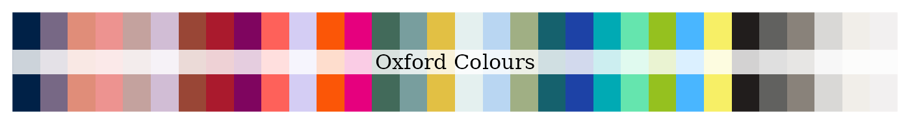

Based on the University of Oxford’s visual identity guidelines, the following colours are available from this package:
| name | rgb | cmyk | hex | pantone |
|---|---|---|---|---|
| Oxford blue | 0, 33, 71 | 100, 87, 42, 51 | #002147 | 282 |
| Oxford mauve | 119, 104, 133 | 58, 60, 27, 10 | #776885 | 667C |
| Oxford peach | 224, 141, 121 | 2, 58, 51, 0 | #E08D79 | 4051C |
| Oxford potters pink | 237, 147, 144 | 0, 57, 34, 0 | #ED9390 | 2339C |
| Oxford dusk | 196, 162, 158 | 20, 40, 31, 5 | #C4A29E | 6030C |
| Oxford lilac | 209, 189, 213 | 18, 30, 4, 0 | #D1BDD5 | 524C |
| Oxford sienna | 153, 70, 54 | 25, 82, 80, 19 | #994636 | 4036C |
| Oxford CCB red | 127, 5, 95 | 48, 100, 19, 15 | #AA1A2D | 187C |
| Oxford plum | 127, 5, 95 | 48, 100, 19, 15 | #7F055F | 2425C |
| Oxford coral | 254, 97, 90 | 0, 79, 56, 0 | #FE615A | 178C |
| Oxford lavender | 212, 205, 244 | 19, 22, 0, 0 | #D4CDF4 | 2635C |
| Oxford orange | 251, 86, 7 | 0, 76, 95, 0 | #FB5607 | 1655C |
| Oxford pink | 230, 0, 126 | 0, 100, 0, 0 | #E6007E | 2385C |
| Oxford green | 66, 106, 90 | 79, 35, 64, 26 | #426A5A | 5545C |
| Oxford ocean grey | 120, 158, 158 | 61, 22, 37, 4 | #789E9E | 2211C |
| Oxford yellow ochre | 226, 192, 68 | 10, 23, 93, 1 | #E2C044 | 4016C |
| Oxford cool grey | 228, 240, 239 | 15, 0, 8, 0 | #E4F0EF | 7541C |
| Oxford sky blue | 185, 214, 242 | 34, 6, 0, 0 | #B9D6F2 | 277C |
| Oxford sage green | 160, 175, 132 | 45, 19, 58, 3 | #A0AF84 | 7494C |
| Oxford viridian | 21, 97, 109 | 92, 36, 43, 27 | #15616D | 5473C |
| Oxford royal blue | 29, 66, 166 | 96, 75, 0, 0 | #1D42A6 | 2126C |
| Oxford aqua | 0, 170, 180 | 84, 0, 33, 0 | #00AAB4 | 7710C |
| Oxford vivid green | 101, 229, 174 | 56, 0, 46, 0 | #65E5AE | 3385C |
| Oxford lime green | 149, 193, 31 | 54, 0, 100, 0 | #95C11F | 2292C |
| Oxford cerulean blue | 73, 182, 255 | 68, 11, 0, 0 | #49B6FF | 292C |
| Oxford lemon yellow | 247, 239, 102 | 8, 0, 69, 0 | #F7EF66 | 3935C |
| Oxford charcoal | 33, 29, 28 | 70, 67, 61, 81 | #211D1C | 419 C |
| Oxford ash grey | 97, 97, 95 | 57, 46, 48, 36 | #61615F | 6215 C |
| Oxford umber | 137, 130, 122 | 43, 39, 43, 22 | #89827A | 403 C |
| Oxford stone grey | 217, 216, 214 | 17, 13, 15, 0 | #D9D8D6 | Cool Gray 1 C |
| Oxford shell grey | 241, 238, 233 | 6, 6, 9, 0 | #F1EEE9 | Warm Gray 1 C |
| Oxford off white | 242, 240, 240 | 6, 6, 6, 0 | #F2F0F0 | 663 C |
| Gold | 10122C | |||
| Silver | 10103C |

You can access either the name, RGB, CMYK, hex code, and/or Pantone
values of each Oxford colour through the
get_oxford_colours() function as follows:
## Get hex code for Oxford blue
get_oxford_colours(pattern = "Oxford blue")
#> [1] "#002147"
## Get hex code for all colours with "blue" in their name (show name in output)
get_oxford_colours(pattern = "blue", named = TRUE)
#> Oxford blue Oxford sky blue Oxford royal blue
#> "#002147" "#B9D6F2" "#1D42A6"
#> Oxford cerulean blue
#> "#49B6FF"The get_oxford_colours() function can thus be used to
create your own bespoke combination of colours from the Oxford colours
palette and create your own theme (see next section for University of
Oxford officially recommended themes using the Oxford colours).